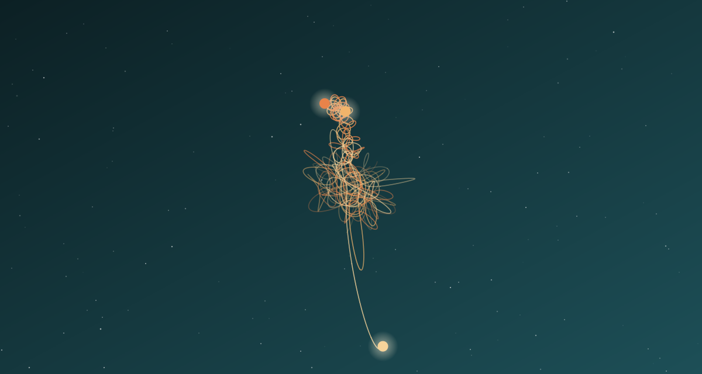

Задача трёх тел · глава 29 из 35
Организация Земля—Трисолярис

Кратко
ОЗТ вербует в основном образованную элиту — учёных, интеллектуалов, влиятельных людей, разочаровавшихся в человечестве. Е Вэньцзе остаётся скорее символом, чем руководителем. Внутри организации растут два почти равных крыла: эсхатологисты, отчаявшиеся в людях и желающие их гибели, и спасенцы, почти религиозно поклоняющиеся Трисолярису как «Господу». Позже появляется третье течение — выживальщики, которые хотят спасти хотя бы своих потомков, служа будущим хозяевам. Главный инструмент вербовки — игра «Задача трёх тел».
Главные моменты
- Измена человечеству как идеология интеллектуалов.
- Эсхатологисты против спасенцев — ОЗТ на грани гражданской войны.
- Выживальщики: просто приспособиться к будущему.
- Игра как фильтр: отобрать тех, кто понял Трисолярис и посочувствовал ему.
Значение
Социальная анатомия предательства: роман показывает, какие разные мотивы приводят людей к одной цели — и почему движение раскалывается изнутри.